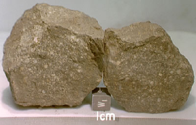

Chondrites form the most common type of stony meteorite (the other main type are known as achondrites) and account for roughly 86% of all meteorite falls. They typically contain chondrules, millimetre-sized grains of silicate material that are thought to have condensed straight from the solar nebula, and appear to have remained essentially unchanged since their formation in the early Solar System.
Apart from the absence of hydrogen and helium, the primary chemical composition of chondrites is the same as that of the original solar nebula, indicating that they have not undergone a period of extended or extreme heating since their formation. This suggests that they originate from non-differentiated objects, such as smaller asteroids, and the observed variations in composition were most likely established as the parent body accreted from the solar nebula at different distances from the Sun.

Credit: NASA/JPL
These compositional variations allow chondrites to be sub-divided into three main groups:
- Carbonaceous Chondrites are the most pristine, showing no evidence of ever having been heated. They can contain up to 20% water by weight, as well as substantial amounts of carbon (present mainly as organic compounds such as amino acids) and oxidised elements. With the highest proportion of volatile elements, they are thought to have originated from asteroids accreted at relatively large distances from the Sun.
- Ordinary Chondrites also contain oxidised and volatile elements, but to a lesser degree than the carbonaceous chondrites. Their parent asteroids are thought to have formed in the inner asteroid belt.
- The main elemental constituent of Enstatite Chondrites is iron in its metallic or sulfide state. This is in contrast to ordinary and carbonaceous chondrites in which iron is mostly present as oxides and tied up in silicates. The high metal, low oxygen content for enstatite chondrites suggests that these meteorites may have originated in the inner Solar System.
Although their primary composition matches that of the solar nebula, the chemical and isotopal composition of chondrites has been altered by secondary processes. The degree to which the chondrite has been altered is indicated by an integer between 1 and 7. Specifically, chondrite types 1 and 2 have been chemically altered in the presence of abundant water, while types 3 to 7 display progressively more heat-induced alterations to both the chondrules and the chondrite itself.